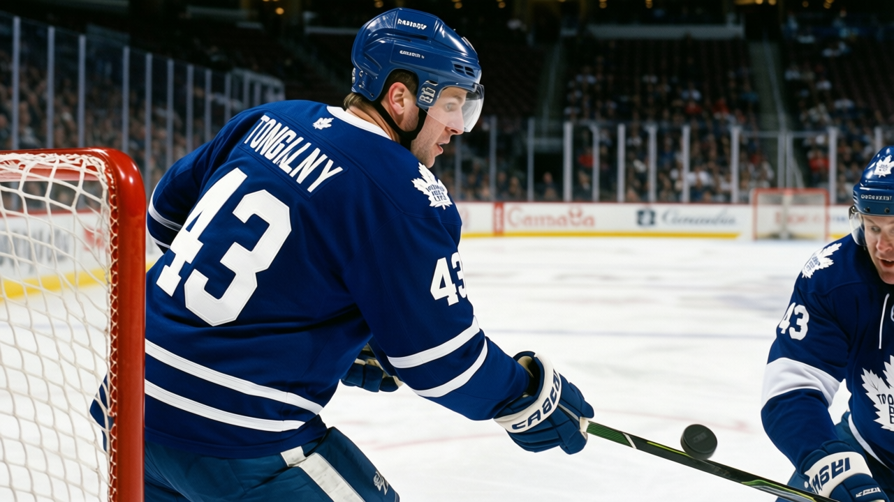

THE PANIC METER: code Green, because Mogilny has 29 assists and I was wrong
Nine goals against St. Louis, the same goals-against as Colorado, and the centre ice finally has a shape I cannot complain about
 Frankie DanforthColumnist · Queen City Telegram
Frankie DanforthColumnist · Queen City Telegram
Code Green

The piece
The  Toronto Maple Leafs put 9 past
Toronto Maple Leafs put 9 past  St. Louis Blues last night. St. Louis Blues managed 2 on 24 shots. The scoreline is what it is, but the thing I keep turning over is the secondary scoring.
St. Louis Blues last night. St. Louis Blues managed 2 on 24 shots. The scoreline is what it is, but the thing I keep turning over is the secondary scoring.  Alexander Mogilny84 has 29 assists in 30 games. Petr Chlup80 has 19 points in 23 games at 18.
Alexander Mogilny84 has 29 assists in 30 games. Petr Chlup80 has 19 points in 23 games at 18.  Brad Richards83 has 38 points in 34 at 17.4 minutes.
Brad Richards83 has 38 points in 34 at 17.4 minutes.
I have been asking for a second centre since before this season started. I have written that the fourth line is a tax. I have written that every winger is a suspect. And I am sitting here on 2004-12-22 with the Toronto Maple Leafs at 26-6-0, 56 points, 206 goals for, 98 against.  Colorado Avalanche is the closest thing to a rival on this continent: 23-6-2, 50 points, 155 for, 98 against. Same goals-against total. 206 versus 155 in the other direction.
Colorado Avalanche is the closest thing to a rival on this continent: 23-6-2, 50 points, 155 for, 98 against. Same goals-against total. 206 versus 155 in the other direction.
The crease is settled.  David Aebischer83 has G1.
David Aebischer83 has G1.  Ed Belfour90 is the backup at 39 and has played 10 games. Mikael Tellqvist72 went down 3 on the Index and sits behind both. Done. I have no argument left there.
Ed Belfour90 is the backup at 39 and has played 10 games. Mikael Tellqvist72 went down 3 on the Index and sits behind both. Done. I have no argument left there.
Now  Atlanta Thrashers comes to town Thursday. Atlanta Thrashers is 8-19-2 with 24 points. The same Atlanta Thrashers that put 7 past us on 2004-12-16 and ended the streak. The League Scouting Bureau does not care that they are bad. They scored 7. We scored 3. I need to remember that while I am sitting at Code Green and it feels wrong.
Atlanta Thrashers comes to town Thursday. Atlanta Thrashers is 8-19-2 with 24 points. The same Atlanta Thrashers that put 7 past us on 2004-12-16 and ended the streak. The League Scouting Bureau does not care that they are bad. They scored 7. We scored 3. I need to remember that while I am sitting at Code Green and it feels wrong.
The road trip starts Sunday:  Calgary Flames,
Calgary Flames,  Edmonton Oilers,
Edmonton Oilers,  Vancouver Canucks,
Vancouver Canucks,  New Jersey Devils. Edmonton Oilers is on a 4-game win streak but 13-11-1 with 135 goals against to 130 for. New Jersey Devils is 17-6-3 with 91 goals against in 30 games. That is the one I should worry about. I am not, because I have run out of things to be angry about.
New Jersey Devils. Edmonton Oilers is on a 4-game win streak but 13-11-1 with 135 goals against to 130 for. New Jersey Devils is 17-6-3 with 91 goals against in 30 games. That is the one I should worry about. I am not, because I have run out of things to be angry about.
The second-centre question is the one I have been asking the longest. Richards at 38 points is not a number-one centre by any definition. But he is good enough at 17.4 minutes, and Mogilny at 35 is collecting 29 assists from the wing, and the kid has 11 goals in 23 games at 18 years old. The second line has  Marian Gaborik94 on one side and
Marian Gaborik94 on one side and  Mats Sundin85 on the other. That is enough. I said it would not be enough. I was wrong.
Mats Sundin85 on the other. That is enough. I said it would not be enough. I was wrong.
Code Green. The fourth line might still be a tax. Everything else is working.